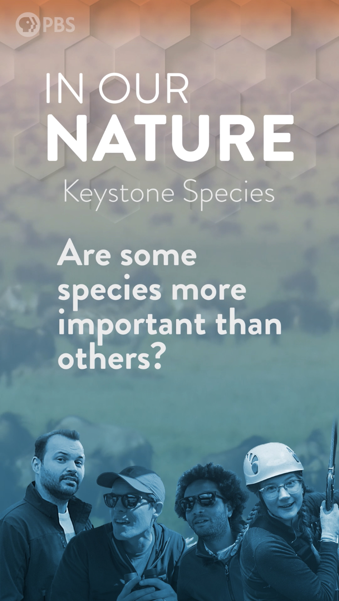
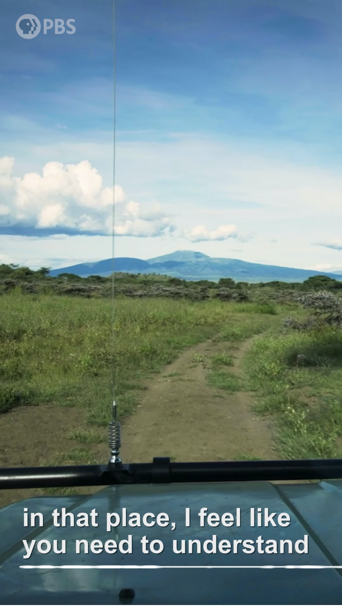
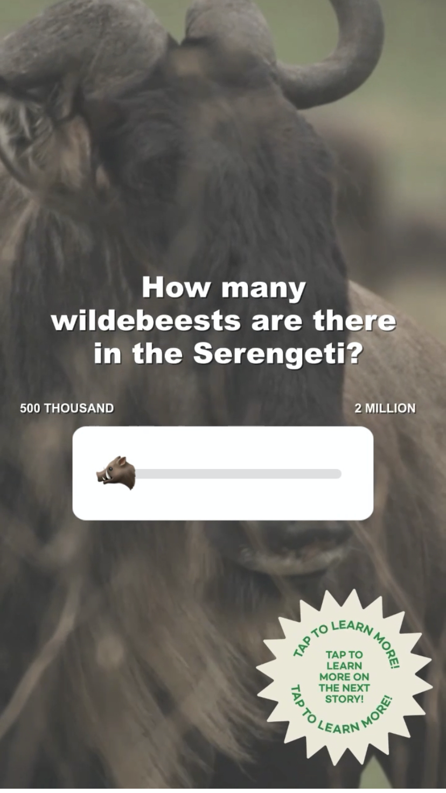
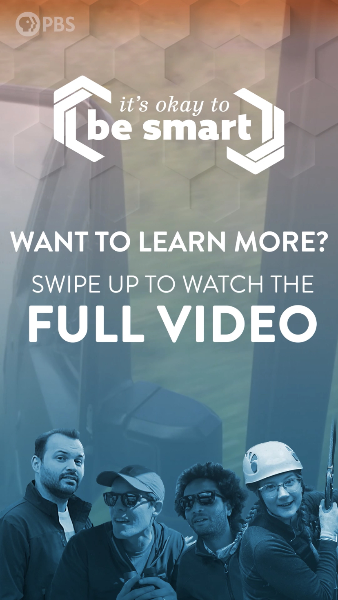

🙂 about
At PBS Digital Studios, I was tasked with managing social media accounts, mainly Instagram, YouTube, and Twitter, creating content, writing social copy, watching initial video cuts, and updating playlists weekly to showcase new content.
Originally, I was supposed to work with both the Associate Director of Programming and the Audience Development Manager. However, before my internship started, the team restructured and did not have an Audience Development lead. As a result, it gave me an opportunity to dive deep into social media marketing for a large media company but also left many questions unanswered.
One of the biggest issues I faced was the lack of interaction with the PBSDS Instagram. As PBS Digital Studios was a fairly new subset of PBS, many people were unaware of what it was and thus the account lacked an engaged following. I expressed these concerns with my manager and proposed my idea of using creating Instagram story series. Since PBS Digital Studios has a younger audience than PBS itself, I thought it would be helpful to experiment with the Instagram story function. I noticed that many of the Instagram stories that had previously been published were reposts from other accounts. Similiar to how many media organizations currently do, I thought we could both promote the large array of PBSDS' video shows and grow the Instagram account by developing interactive Instagram stories based on the studio's shows. Over a span of two weeks, I storyboarded, edited and designed a 15-part Instagram series from the original 20-minute video. While we lacked the resources to continue with innovating on this project and get solid numbers, both the teams at PBS Digital Shows and the show hosts loved the idea and shared stories with many of their acquaintances.



